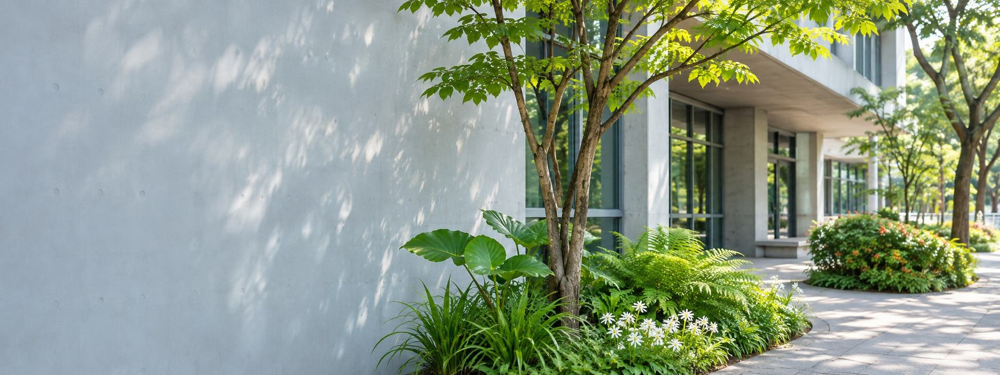

持續推動節能減碳
依盤查結果提出可行的減量方案並執行。
公益計畫
一份早餐・十年陪伴・持續前行
我們想做的很簡單：讓孩子吃飽，再去上學。大日開發自 2016 年起支持基隆市太陽早餐計畫。

永續 ESG
從總公司的溫室氣體盤查開始，掌握自己的排放，再擬定減量做法；同時持續投入在地公益。
E 環境
依 ISO/CNS 14064-1:2018，自願盤查臺北總公司（基準年 2024）。
依盤查結果提出可行的減量方案並執行。
成立溫室氣體盤查小組，由總經理擔任主席，成員皆完成培訓。
遵行環保法規，以國內外標準作為自我提升的依據。
S 社會
2016 年起支持基隆市太陽早餐計畫；每年提撥營餘投入公益：贊助基層球隊、希望工程課後照顧與公益捐血；108 年獲頒華人公益大使。
S 社會
總公司與各停車場、場域的服務團隊，部門涵蓋營運、工程、商業開發、資訊與法務。
G 治理
訂有溫室氣體盤查管理與內部查證程序，報告每年製作一次，紀錄保存 6 年。
支持基隆市太陽早餐計畫
公益贊助棒球隊、壘球隊、籃球隊
希望工程課業輔導延長照顧計畫
獲頒華人公益大使（108 年）
公益捐血活動
活動照片整理中。